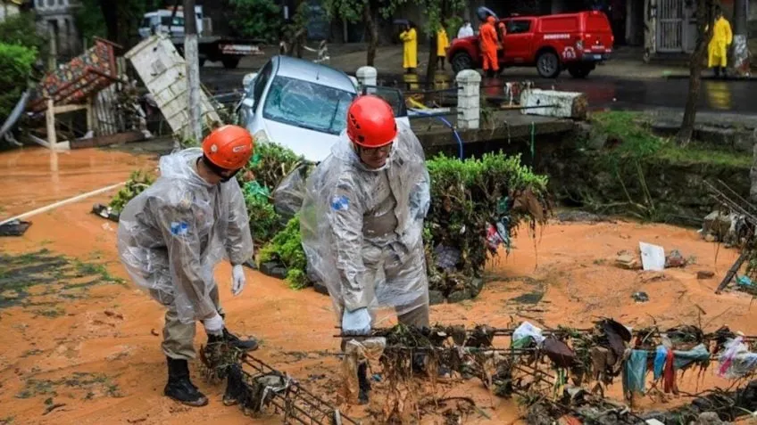
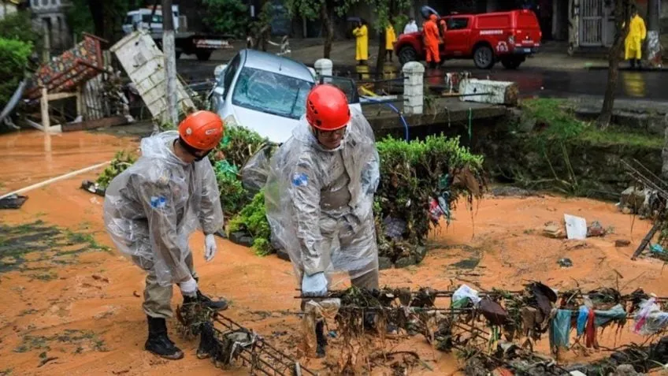
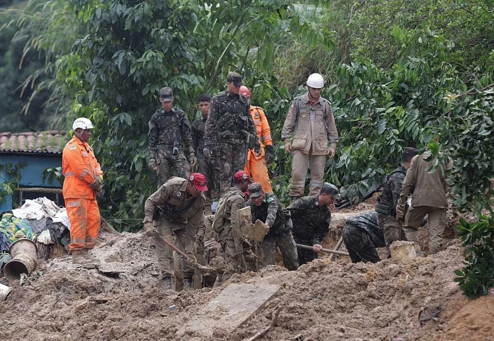
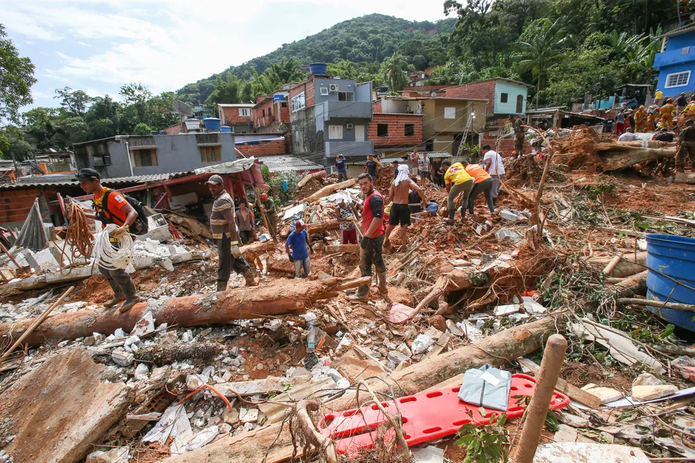
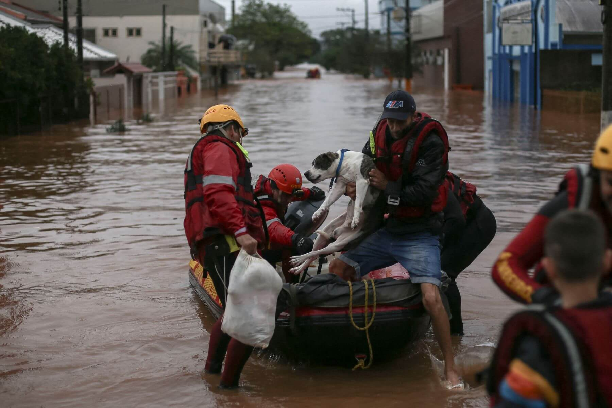
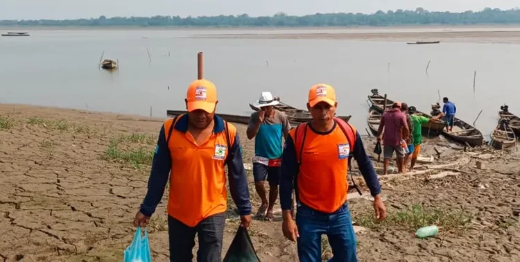

Enchentes e Deslizamentos em Petrópolis (RJ) - 2022
Resgate em Áreas de Risco e Apoio Psicológico.

Atuamos em diversos locais do país ajudando quem precisa:
Resgate em Áreas de Risco e Apoio Psicológico.
Logística de Kits de Sobrevivência e Alojamento.
Reconstrução de Infraestrutura e Resgate em Múltiplos Municípios.
Missão Gigante de Resgate, Reconstrução e Apoio Animal.
Ajuda Humanitária e Logística de Água Potável.
